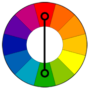
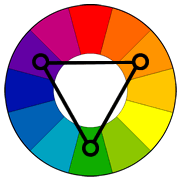
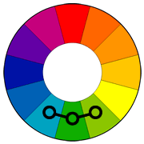

Color Scheme generator by Telerik Arsov
This site uses 5 general rules for creating color schemes. Each scheme consists of 5 colors, the first one being the base color.
|  | Complementary The high contrast of complementary colors creates a vibrant look especially when used at full saturation. This color scheme must be managed well so it is not jarring. Complementary colors are tricky to use in large doses, but work well when you want something to stand out. Complementary colors are really bad for text. |
|  | Triad Triadic color harmonies tend to be quite vibrant, even if you use pale or unsaturated versions of your hues. To use a triadic harmony successfully, the colors should be carefully balanced
- let one color dominate and use the two others for accent. |
|  | Analogous Analogous color schemes are often found in nature and are harmonious and pleasing to the eye. Make sure you have enough contrast when choosing an analogous color scheme. Choose one color to dominate, a second to support. The third color is used (along with black, white or gray) as an accent.
|